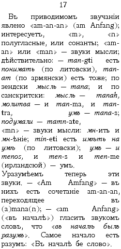
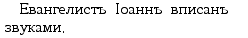
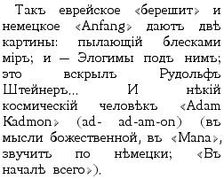

Glossolalia (Section 17)

In the sounds mentioned is represented "am-an-an" (Am Anfang); it is interesting, that "m" and "n" are semivowels, or sonants; "am-an" or "man" are -- the sounds of thought; actually: -- man-yti is "to comprehend" [ponimat'] (in Lithuanian), man-am (in Armenian) is also this; in Zendic thought is -- mana; and in Sanskrit thought is -- manah, prayer is -- both man-ma, and man-tra, mind is -- mana-s; had in mind is -- mamn-ate ; "mn" are -- sounds of thought: Russian mn-it' is me think and mn-enie is my opinion; min-eti is to "have in mind" [imet' na ume] (in Lithuanian); mind is -- menos, both men-s and men-me (Irish) are -- mind. Now we can be mindful of these sounds. -- "Am Anfang" -- in them is the combination of "am-an-an," which is transformed into (a)mana(n); -- "am Anfang" ("in the beginning") announces with the sound of the words, that "in the beginning there was a reasoning mind." The very beginning is a reasoning mind: "In the beginning was the word."

The Evangelist John is inscribed with sounds.

Thus the Jewish "bereshit" and the German "Anfang" give two pictures: a world aflame with gleamings; and -- the Elohim beneath it; this was revealed by Rudolf Steiner. . . And the cosmic man "Adam Kadmon" (ad- ad-am-on) (in the divine thought of God, in "Mana", sounds in German; "In the beginning of it all").